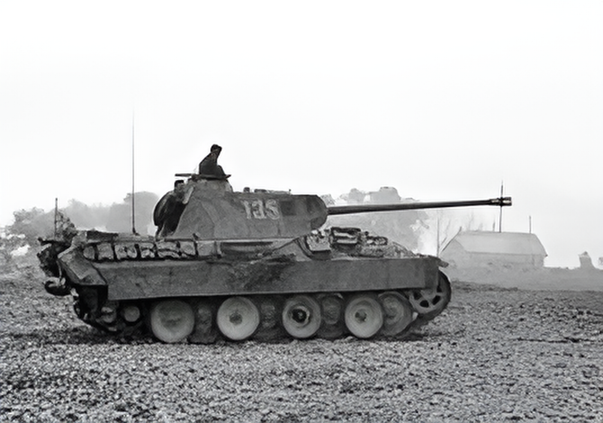

The Panther (Panzerkampfwagen V) was a German medium tank introduced in 1943, designed to counter the Soviet T-34-85 and provide a balance of firepower, armor, and mobility. It became the main medium tank of Germany’s armored divisions in the later stages of World War II, serving on both the Eastern and Western fronts. The Panther proved highly effective against Soviet T-34s and American Shermans, combining firepower and protection superior to many Allied tanks. However, its complexity made it expensive and time-consuming to produce. Despite these drawbacks, the Panther became a symbol of German armored strength and influenced postwar tank design globally.

- Characteristics:
- Type: Medium tank
- Weight: 45 tons
- Crew: 5
- Gun: 75mm
- Speed: 55 km/h